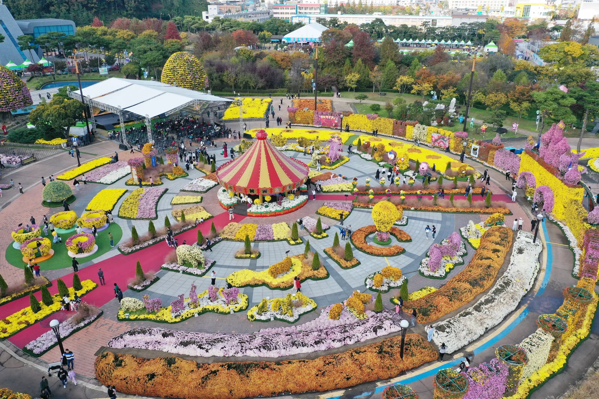
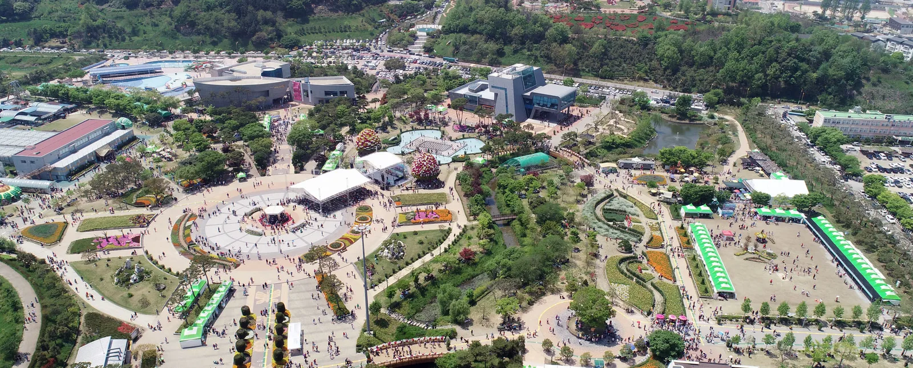
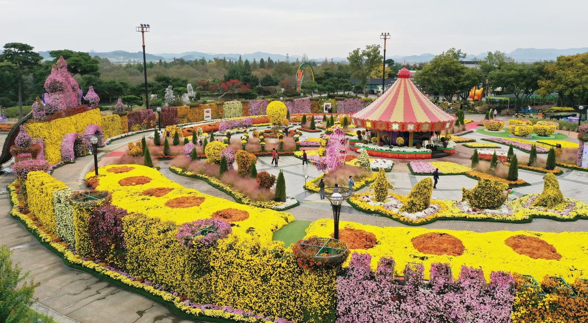
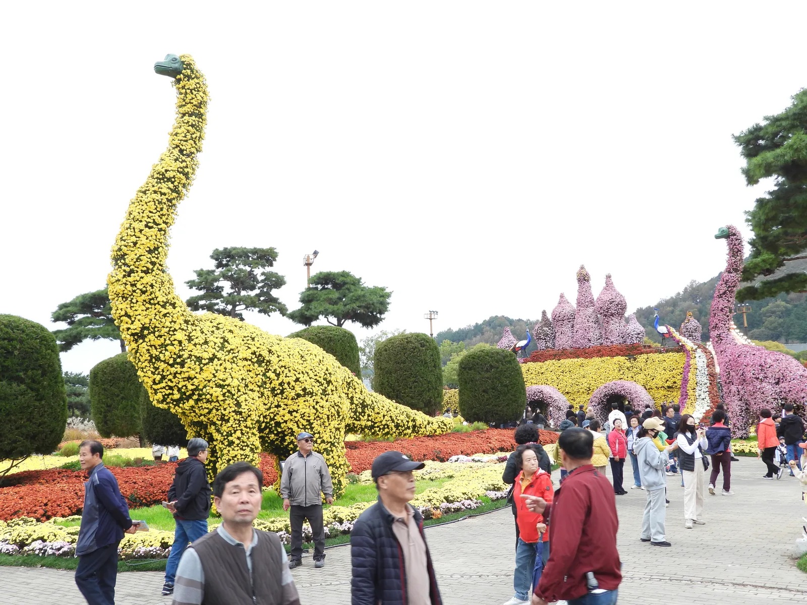
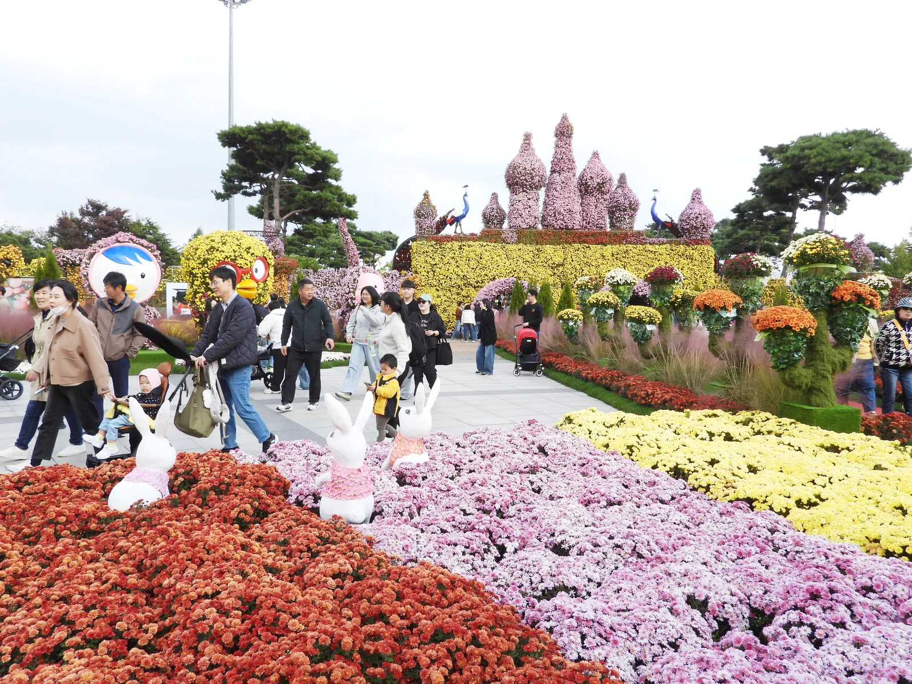
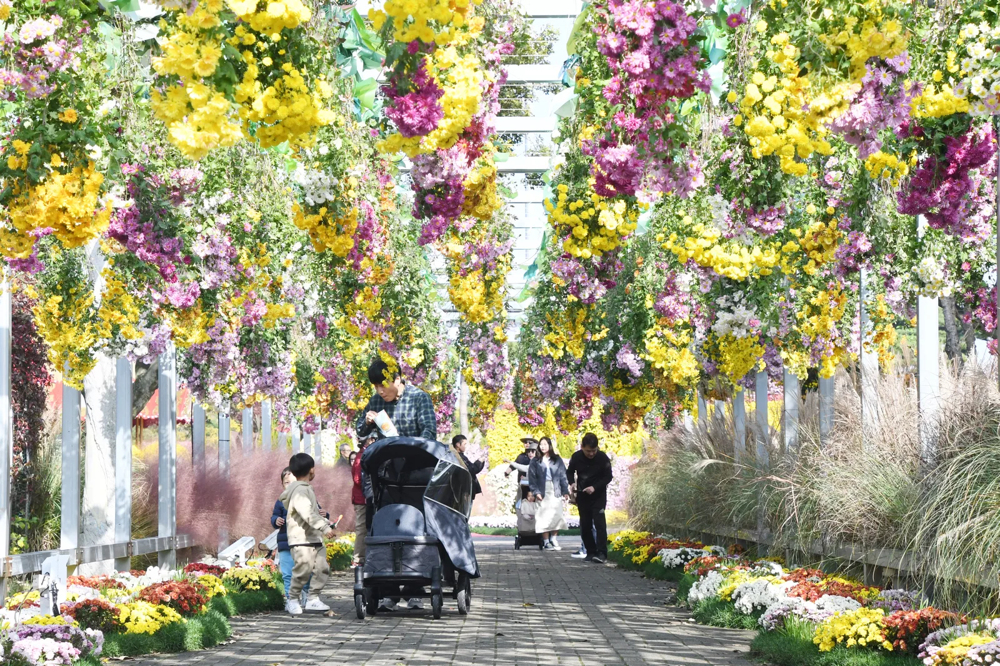
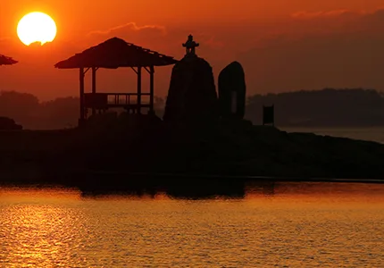

▲ 함평 대한민국 국향대전 축제장 전경. 회전목마·대관람차를 본뜬 대형 국화 조형물이 원형 광장을 채운다
전남 함평군 함평엑스포공원에서 2026년 10월 23일(금)부터 11월 8일(일)까지 17일간 대한민국 국향대전이 열린다. 올해 주제는 '신화의 국화동산'. 같은 공원에서 매년 봄 함평나비대축제가 열리고 가을이면 국향대전이 열리는데, 익산 등 다른 지역의 국화축제가 매년 임시로 행사장을 꾸리는 것과 달리 함평은 30만 평 규모의 상설 엑스포공원을 그대로 무대로 쓴다는 점이 다르다. 이 기사는 함평 국향대전이 다른 국화축제와 어떻게 다른지, 규모와 볼거리, 입장료·주차·가는 법까지 정리했다.
1. 왜 함평인가 — 나비대축제가 만든 '청정 꽃 도시' 브랜드

▲ 봄이면 같은 공원에서 함평나비대축제가 열린다. 사진은 축제 기간 함평엑스포공원 원형 광장 전경 ⓒ 함평군청
함평이 '꽃과 나비의 도시'로 불리게 된 출발점은 국화가 아니라 나비다. 1999년 함평천 정화사업을 계기로 시작된 함평나비대축제는 매년 4월 말~5월 초 함평엑스포공원과 함평천 일대에서 열리며, 2026년 기준 28회째를 맞는다. 나비는 오염되지 않은 곳에서만 서식한다는 이미지 덕에, 함평은 나비축제를 계기로 '생태관광도시'·'친환경농업군'이라는 청정 브랜드를 얻었다. 세계축제협회로부터 2012년 '세계축제도시'로 선정되기도 했다. 국향대전은 이 봄 축제의 무대를 그대로 물려받아 가을 시즌 콘텐츠로 채운 행사다. 즉, 국향대전만 따로 떼어놓고 보면 '가을 국화축제' 중 하나지만, 나비대축제와 묶어서 보면 같은 상설 공원이 봄·가을 두 시즌 내내 꽃 축제 무대로 쓰이는 구조라는 점이 함평만의 특징이다.
2. 함평엑스포공원, 30만 평 상설 공원이라는 규모

▲ 분홍 국화로 쌓은 성 모양 조형물과 회전목마. 축제장 뒤로는 지리적으로 산세에 둘러싸인 엑스포공원 부지가 이어진다 ⓒ 함평축제관광재단
함평엑스포공원은 약 30만 평 부지에 나비곤충생태관, 자연생태관, 다육식물관, 수생식물관, 아열대농업관, 황금박쥐특별전시관, VR체험장, 물놀이장, 함평자동차극장, 파크골프장, 군립미술관까지 갖춘 상설 테마파크형 공원이다. 매년 임시로 부지를 꾸려야 하는 다른 지역 국화축제와 달리, 함평은 이미 조성된 공원 인프라 위에 국화 조형물과 화단만 얹는 방식이라 축제 규모와 완성도를 매년 축적해 올 수 있었다. 공원 자체가 야간경관조명이 켜지는 야경 명소로도 알려져 있어, 낮에 조형물을 둘러본 뒤 저녁까지 머무르며 조명이 어우러진 풍경을 함께 볼 수 있다.
3. 대형 국화 조형물 — 회전목마부터 공룡까지

▲ 노란 국화로 뒤덮인 대형 공룡 조형물. 뒤로 보이는 분홍 첨탑과 공작 조형물까지, 캐릭터형 대형 조형물이 함평 국향대전의 핵심 볼거리다 ⓒ 함평축제관광재단
직전 시즌인 '마법의 국향랜드'(2025) 콘셉트에서는 회전목마·대관람차를 모티브로 한 대형 국화 조형물을 중심으로, 공룡·토끼·공작 같은 캐릭터형 조형물이 곳곳에 배치됐다. 2026년 '신화의 국화동산' 주제로도 대형 국화 기획작품과 국화 분재 특별전시가 함께 운영될 예정이다. 핑크뮬리, 팜파스그라스, 억새 같은 가을 식물이 국화 화단 사이에 섞여 있어 색감이 단조롭지 않다.

▲ 흰 국화로 만든 토끼 조형물과 캐릭터 얼굴 조형물. 국화 색으로 구분한 화단 사이사이에 소형 포토존이 촘촘히 배치돼 있다 ⓒ 함평축제관광재단

▲ 머리 위로 국화와 화훼가 늘어진 화훼 터널. 유모차 동반 가족 단위 관람객이 지나가기 좋은 평지 산책로로 이어진다 ⓒ 함평축제관광재단
4. 익산 국화축제와 뭐가 다른가
같은 가을 시즌, 전북 익산에서도 무료 국화축제가 열린다. 두 축제 모두 대형 국화 조형물이 핵심이지만, 운영 방식은 꽤 다르다.
| 구분 | 함평 대한민국 국향대전 | 익산 천만송이 국화축제 |
|---|---|---|
| 기간 | 10월 23일~11월 8일, 17일간 | 10월 24일~11월 2일, 10일간 |
| 장소 | 함평엑스포공원(상설 공원, 약 30만 평) | 중앙체육공원(축제 기간 임시 조성) |
| 입장료 | 유료(성인 정가 7,000원대) | 무료 |
| 대표 조형물 | 회전목마·대관람차·공룡 등 캐릭터형 | 백제 왕도 모티브 대형 조형물 |
| 연계 콘텐츠 | 봄 나비대축제와 같은 공원 사용 | 단독 가을 행사 |
익산 축제가 무료 입장과 접근성으로 단기간에 많은 인파를 모으는 구조라면, 함평은 유료 입장 대신 상설 공원의 인프라와 축적된 조형물 완성도로 승부하는 쪽에 가깝다. 하루 일정으로 국화 조형물만 보고 싶다면 익산도 대안이 되지만, 나비생태관·자연생태관 같은 상설 전시까지 함께 즐기며 반나절 이상 머무를 계획이라면 함평 쪽이 동선을 짜기 편하다.
5. 입장료·주차·가는 법
2026년 국향대전 입장권은 9월 23일부터 10월 22일까지 사전예매가 진행되며, 사전예매가는 정가에서 10% 할인된 성인 6,300원, 청소년·군인 4,500원, 유아·어린이·경로 우대 2,700원이다. 정가 기준(2025년 참고)으로는 성인 7,000원, 청소년 5,000원, 어린이 3,000원이며, 함평군민은 신분증을 지참하면 무료 입장할 수 있다. 20인 이상 단체는 1,000원 할인이 적용된다. 예매는 NOL·네이버 등 온라인 플랫폼에서 가능하고, 온라인 예매가 어려우면 함평엑스포공원 내 함평축제관광재단 사무실에서 현장 구매할 수 있다.
함평축제관광재단 공식 홈페이지에서 국향대전 안내 확인 가능| 항목 | 내용 |
|---|---|
| 주차장 | 엑스포공원 내 상설 주차장(약 400대), 평상시 무료 운영. 축제 성수기 주말에는 인근 임시 주차장·유료 주차장과 셔틀버스가 추가 운영될 수 있어 여유 있게 도착하는 편이 안전하다 |
| 서울 → 함평 | 고속버스 기준 약 4시간 40분 소요, 자가용은 서해안고속도로 이용 시 약 3시간 30분~4시간 |
| 광주 → 함평 | 차량 기준 약 20~30분 |
| 주소 | 전남 함평군 함평읍 곤재로 27 |
| 운영시간 | 평시 09:00~18:00(매표 마감 관람 종료 1시간 전), 축제 기간은 야간 연장 운영 |
자가용으로 갈 경우 서해안고속도로 함평IC와 무안광주고속도로가 가까워 광주·목포 방면에서의 접근성이 특히 좋다. 서울에서는 하루 왕복이 부담스러울 수 있는 거리이므로, 인근 관광지와 묶어 1박 일정으로 계획하는 편이 여유 있다.
6. 함평 여행 연계 — 돌머리해수욕장과 함평 한우

▲ 함평만 낙조로 유명한 돌머리해수욕장의 노을. 엑스포공원에서 차로 이동해 하루 일정에 묶기 좋다 ⓒ 함평군청
국향대전만 보고 돌아가기엔 함평은 볼거리가 더 있다. 서해안 낙조와 갯벌, 넓은 백사장이 어우러진 돌머리해수욕장은 함평만의 노을 명소로 꼽히며, 엑스포공원에서 차로 이동해 오후엔 국화 구경, 저녁엔 노을 감상으로 일정을 짜는 경우가 많다. 먹거리로는 함평천지한우로 대표되는 함평 한우가 있다. 신선한 지역 농산물과 함께 내는 한우생고기비빔밥이 함평을 대표하는 향토음식으로 꼽힌다.
✅ 함평 국향대전, 가기 전 체크리스트
· 2026년 10월 23일(금)~11월 8일(일), 17일간 함평엑스포공원(약 30만 평)에서 개최
· 테마 '신화의 국화동산', 대형 국화 조형물·국화 분재 특별전시 운영
· 같은 공원에서 매년 4월 말~5월 초 함평나비대축제 개최 — 봄·가을 상설 꽃 축제 무대
· 입장료 사전예매(9/23~10/22, 10% 할인) 성인 6,300원, 함평군민은 신분증 지참 시 무료
· 익산 국화축제와 달리 유료·상설 공원 기반, 나비생태관 등 상설 전시 함께 관람 가능
· 주차장 약 400대, 평시 무료. 성수기 주말은 임시 주차장·셔틀 여부 확인 필요
· 자가용 기준 서울 3시간 30분~4시간, 광주 20~30분
· 돌머리해수욕장·함평 한우와 묶어 1박 일정으로 계획하면 여유 있다